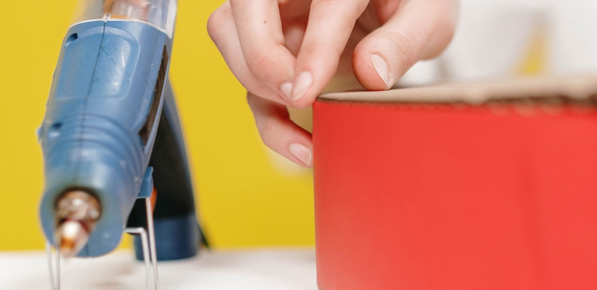

Superhelden surprise maken: 6 ideeën met stappenplan
Zes surprises die je van karton maakt, met per stuk wat je nodig hebt, hoe lang je erover doet en welk cadeau erin past. Alle zes zijn te maken op één avond of twee, en voor geen enkele heb je iets nodig wat niet bij de supermarkt of online te krijgen is.

In het kort
Dit zijn de zes, van de snelste naar de bewerkelijkste. De tijd is de tijd die je er als volwassene aan kwijt bent, droogtijd niet meegerekend. Klik op een naam om naar het stappenplan te springen.
| Surprise | Voor wie | Tijd | Moeilijk | Wat past erin |
|---|---|---|---|---|
| De hamer van Thor | 4 jaar en ouder | 45 minuten | Makkelijk | Alles tot een schoenendoos |
| Het web van Spider-Man | 5 jaar en ouder | 1 uur | Makkelijk | Iets plats: een boek, een spel, een shirt |
| Het schild van Captain America | 6 jaar en ouder | 1 uur | Makkelijk | Iets ronds en niet te zwaar |
| De arc reactor van Iron Man | 7 jaar en ouder | 1,5 uur | Middel | Kleine cadeaus, tot een doos van 20 cm |
| Het Bat-signaal | 7 jaar en ouder | 1,5 uur | Middel | Een zaklamp, een boek, een spel |
| De vuist van de Hulk | 8 jaar en ouder | 2 avonden | Bewerkelijk | Een figuur of een bouwset |
De datum die telt is niet 5 december. Op de meeste basisscholen worden de lootjes in de tweede helft van november getrokken en gaan de surprises in de eerste week van december mee naar school, vaak al op 3 of 4 december. Reken dus terug vanaf de dag dat hij af moet zijn en niet vanaf pakjesavond. En reken de droogtijd mee: verf op karton is pas de volgende ochtend echt droog, en papier-maché heeft twee nachten nodig.
Waar het bij een surprise op aankomt
Een surprise hoeft niet mooi te zijn, hij moet herkenbaar zijn. Vier dingen bepalen of dat lukt, en op geen daarvan staat het antwoord in een knutselboek.
Eén vorm, en die moet je van vijf meter afstand herkennen. De surprises die mislukken zijn bijna altijd de surprises die te veel willen: een held, plus zijn stad, plus zijn logo. Kies één ding dat iedereen kent, een hamer, een web, een schild, en maak dat groot. Alle zes hieronder zijn zo gekozen.
Het cadeau bepaalt de vorm, niet andersom. Meet eerst wat erin moet en teken dan pas. Een plat cadeau past niet in een hamer en een bouwdoos past niet achter een web. In de tabel hierboven staat per surprise wat erin past, en dat is de kolom waarmee je begint.
Het kind moet het grootste deel zelf kunnen doen. Een surprise die door een ouder gemaakt is, is een ouderproject. Snijden in dik karton is werk voor een volwassene, verven en plakken niet. Bij elk stappenplan hieronder staat welke stap van jou is.
Er moet iets opengaan. Dat is het hele idee: het cadeau zit erin en komt eruit. Plan dus vanaf het begin een luik, een deksel of een achterkant die los kan, en plak die met tape en niet met lijm. Wat dichtgelijmd zit, wordt op pakjesavond stukgetrokken.
Wat je in huis moet hebben
Voor alle zes gebruik je hetzelfde: karton, tape, verf en lijm. Dit is wat wij zouden halen, met de prijs die live van bol komt. Het duurste op deze lijst is een kant-en-klaar pakket, en dat staat er bewust bij: als het 3 december is en er is nog niets, is dat een betere uitkomst dan een half afgemaakte hamer.
Gekleurd karton, 100 vellen A4
Het spul waar vijf van de zes surprises hieronder uit bestaan. Van 200 grams karton kun je vormen knippen die blijven staan zonder dat je hoeft te snijden, en het neemt verf aan zonder meteen te kromtrekken. Tien kleuren betekent bovendien dat je het rood van Iron Man en het groen van de Hulk niet eerst hoeft te verven: je knipt hem gewoon uit de goede kleur, en dat scheelt een hele droogavond. Dit is ook het best beoordeelde product op deze pagina.
- Blijft staan zonder karton uit een verhuisdoos te hoeven snijden
- Tien kleuren, dus voor de meeste helden hoef je niet te verven
- Het best beoordeelde product op deze pagina
- Te dun voor iets groots: voor het schild en de vuist heb je ook een doos nodig
- Honderd vellen is veel meer dan één surprise kost
Plakkaatverf, zes potjes
Plakkaatverf dekt op karton waar waterverf doorschijnt, en dat is precies het verschil tussen een groene vuist en een bruine vuist met een groene waas. Uitwasbaar, dus het is de verf die je een kind van vier in handen durft te geven. De potjes zijn hersluitbaar, wat bij een surprise van twee avonden meer uitmaakt dan het klinkt.
- Dekt in één laag op gekleurd karton
- Uitwasbaar, ook uit kleren
- De goedkoopste keuze op deze pagina
- 45 ml per kleur is weinig voor iets groots als de vuist van de Hulk
- Maar acht beoordelingen bij bol, dus dat cijfer zegt nog niet veel
Afplaktape, 30 mm
De cirkels van Captain America en de ring van de arc reactor worden met de hand nooit recht. Met afplaktape wel: je plakt af, verft eroverheen en trekt hem er na een half uur af. Dit is ook de tape waarmee je het luik plakt waar het cadeau doorheen moet, want hij laat weer los zonder het karton mee te nemen. Van alles op deze pagina heeft dit product de meeste beoordelingen.
- Maakt rechte randen en cirkels mogelijk zonder tekenen
- Laat los zonder het karton kapot te trekken
- De meeste beoordelingen van alles op deze pagina
- Geen kinderproduct: op zichzelf een saai ding om in huis te halen
- Laat hem niet op verse verf liggen, dan trekt hij de laag eraf
Papier-maché lijm, 1 kilo
Van de zes surprises hieronder is er precies één die niet van plat karton kan: de vuist. Die maak je over een opgeblazen ballon met stroken krantenpapier, en dan heb je lijm nodig die uithardt in plaats van behangplaksel dat blijft plakken. Een kilo is genoeg voor twee vuisten, dus als er twee kinderen in huis lootjes hebben getrokken, ben je hiermee klaar.
- Hardt uit tot iets wat een cadeau kan dragen
- Een kilo is genoeg voor twee grote surprises
- Zes beoordelingen, en dat is voor knutsellijm relatief veel
- Twee nachten drogen, dus dit is de enige surprise die je niet op één avond doet
- Alleen nodig voor de vuist, voor de andere vijf is gewone lijm genoeg
Spidey blaaspennen met sjablonen
Blaaspennen zijn geen kwast: je blaast door een pen en de kleur waaiert uit over het papier. Voor een kind dat wel wil meedoen maar nog geen fijne lijnen kan trekken, is dat het verschil tussen meehelpen en toekijken. De sjablonen in deze set passen op het web hieronder. Wat het niet is: een surprise-pakket. Het is de versiering, niet de bouw.
- Een kind van vijf kan hier zelf mee werken
- De sjablonen sluiten aan bij het web en het spinnenlogo
- Van deze zes de leukste manier om het kind echt te laten meedoen
- Nog geen beoordelingen bij bol, dus we gaan hier af op wat erin zit
- Geeft vlekken buiten het papier, dus leg de tafel af
- Geen bouwmateriaal: hiermee alleen komt er geen surprise
Kant-en-klaar surprisepakket, robot
Alles voorgesneden in één doos, in elkaar te zetten in ongeveer een uur. Het is geen superheld maar een robot, en dat is eerlijk gezegd de enige reden dat hij onderaan deze lijst staat en niet bovenaan. Wij zetten hem erbij omdat de avond van 3 december bestaat en omdat een afgemaakte robot beter is dan een half afgemaakt schild. Duurder dan zelf maken, en dat is precies waar je voor betaalt.
- Alles zit erin, je hoeft niets meer te halen
- In ongeveer een uur klaar, zonder snijwerk
- Het kind kan het grootste deel zelf doen
- Geen superheld maar een robot
- Het duurste op deze pagina, en meer dan het karton en de verf samen
- Maar twee beoordelingen bij bol, dus die score zegt weinig
1. De hamer van Thor
De snelste van de zes en de enige waarbij het cadeau in een gewone doos blijft zitten. Je bouwt geen hamer om het cadeau heen, je maakt van de doos de kop van de hamer. Daardoor past er alles in wat in een schoenendoos past, en dat is de reden dat deze bovenaan staat als je nog niet weet wat je gaat geven.
Nodig:
- Een schoenendoos of een doos van vergelijkbaar formaat
- Een stuk stevig karton of een kartonnen koker voor de steel, ongeveer 40 cm
- Grijs en bruin karton, of grijze en bruine verf
- Afplaktape en lijm
- Meet het cadeau en kies een doos waar het net in past. Zit er ruimte over, vul die dan met krantenpapier: een hamer die rammelt verraadt zichzelf.
- Beplak de doos helemaal met grijs karton, of verf hem grijs. Grijs karton is sneller, want dan hoef je niet te wachten tot het droog is.
- Rol van een A4 een koker van ongeveer 4 cm doorsnee en plak hem dicht. Maak er zo drie en schuif ze in elkaar tot een steel van ongeveer 40 cm. Beplak of verf die bruin.
- Knip in het midden van één zijkant van de doos een kruis van 4 bij 4 cm en duw de steel erdoorheen. Dit is de stap voor een volwassene, want er moet met een mes gesneden worden.
- Lijm de steel aan de binnenkant vast met een paar stroken karton eromheen, zodat hij niet gaat kantelen.
- Wikkel het onderste stuk van de steel in bruin papier of stof en zet dat vast met een strook tape: dat is het handvat, en het is meteen de plek waar iedereen de hamer vastpakt.
- Plak vier grijze cirkels op de kop van de hamer, twee aan elke kant, als de klinknagels. Dat kleine detail maakt hem herkenbaar.
- Maak het deksel vast met twee stroken afplaktape en niet met lijm, want daar gaat het cadeau uit.
Tip: laat het kind de klinknagels knippen en plakken. Dat is de stap die het meest opvalt en het minst mis kan gaan.
2. Het web van Spider-Man
Een web is de goedkoopste surprise die er is: je hebt karton en touw nodig en verder niets. Hij werkt het beste voor een plat cadeau, want het cadeau hangt in het web en zit er niet in.
Nodig:
- Een groot vel karton of de zijkant van een verhuisdoos, minstens 50 bij 50 cm
- Wit of grijs touw, ongeveer 10 meter
- Rood en blauw karton voor de rand
- Een priem of een schaarpunt om gaatjes te maken
- Knip uit het karton een achthoek van ongeveer 50 cm breed. Een cirkel mag ook, maar een achthoek is makkelijker recht te krijgen.
- Maak langs de rand om de 6 cm een gaatje. Dat is werk voor een volwassene als je een priem gebruikt.
- Span het touw van gaatje naar gaatje door de achthoek heen, steeds naar het gaatje aan de overkant. Zo krijg je de spaken van het web.
- Weef daarna vanaf het midden in rondjes naar buiten: onder de ene spaak door, over de volgende heen. Dit is de stap waar het kind een half uur zoet mee is, en het is de leukste.
- Verf de rand rood of plak er een strook rood karton omheen, met een dun blauw randje ertegenaan.
- Hang het cadeau met een lus touw in het midden van het web, zodat het er echt in lijkt te hangen.
- Knip tot slot een zwarte spin van ongeveer 8 cm en plak die schuin boven het cadeau.
Tip: een web dat niet helemaal regelmatig is, ziet er beter uit dan een perfect web. Trek de draden dus niet allemaal even strak aan.
3. Het schild van Captain America
Van de zes is dit de surprise die het meest op het echte ding lijkt, omdat het echte ding ook gewoon een cirkel is. Het cadeau zit achter het schild in een uitsparing, dus het moet niet te dik zijn.
Nodig:
- Twee grote vellen karton of een verhuisdoos
- Rood, wit en blauw karton, of verf in die drie kleuren
- Afplaktape
- Een touwtje of een strook karton voor de handgreep aan de achterkant
- Teken een cirkel van ongeveer 45 cm. Gebruik een punaise met een touwtje en een potlood als passer, dan wordt hij echt rond.
- Knip of snijd twee van die cirkels. Snijden is werk voor een volwassene.
- Knip uit de tweede cirkel het midden weg, zodat er een rand van 6 cm overblijft. Die ring lijm je op de eerste cirkel: daardoor ontstaat er een holte waar het cadeau in past.
- Verf of beplak de voorkant in vier ringen: rood buiten, dan wit, dan rood, dan blauw in het midden. Plak de randen af met afplaktape voordat je verft, dan lopen de kleuren niet in elkaar.
- Knip een witte ster van ongeveer 12 cm en plak die in het blauwe midden.
- Plak aan de achterkant een strook karton als handgreep, zodat het schild vast te houden is.
- Leg het cadeau in de holte en plak er een cirkel karton overheen met afplaktape. Dat is het luik.
Tip: verf de ringen van buiten naar binnen en laat elke ring een half uur drogen voordat je de volgende aftapet. Dat is de enige manier waarop de randen strak blijven.
4. De arc reactor van Iron Man
De reactor is de ronde lichtgevende plaat op de borst van Iron Man, en als surprise is hij een doos met een lampje erin. Hij is bewerkelijker dan de eerste drie omdat er een lichtje in moet, maar juist dat lichtje maakt hem op een donkere decemberavond de mooiste van de zes.
Nodig:
- Een ronde doos van ongeveer 20 cm, bijvoorbeeld een kaasdoos of een hoedendoos
- Blauw en zilver of grijs karton
- Een klein ledlampje op batterijen, zoals een theelichtje of een fietslampje
- Bakpapier of een wit plastic mapje voor het lichtvenster
- Afplaktape
- Zet het cadeau in de doos en kijk of het deksel nog dichtkan. Past het niet, neem dan een grotere doos: de reactor mag best groot zijn.
- Beplak de buitenkant van de doos met grijs of zilver karton.
- Knip in het deksel een rond gat van ongeveer 8 cm. Dit is de stap voor een volwassene.
- Plak aan de binnenkant van het deksel een stuk bakpapier over het gat. Dat is het venster waar het licht doorheen schijnt.
- Knip uit blauw karton een ring die precies om het gat past, en daarbinnen tien smalle blauwe driehoekjes die naar het midden wijzen. Die driehoekjes zijn wat de reactor herkenbaar maakt.
- Plak het lampje met een strook afplaktape aan de binnenkant van het deksel, gericht op het bakpapier. Zet het aan voordat je het deksel erop doet, en zorg dat de schakelaar bereikbaar blijft.
- Maak het deksel vast met twee stroken afplaktape, zodat het cadeau eruit kan zonder het karton te scheuren.
Tip: gebruik geen echt kaarsje, ook geen klein. Karton en bakpapier vatten vlam, en een led doet in het donker precies hetzelfde.
5. Het Bat-signaal
Het signaal is de schijnwerper waarmee de politie van Gotham Batman roept, en als surprise is hij een kartonnen lamp met een zaklamp erin. Hij werpt echt een vleermuis op de muur, en dat is een truc die het op pakjesavond altijd doet.
Nodig:
- Een doos van ongeveer 25 cm, of een kartonnen koker
- Zwart en geel karton
- Een zaklamp of een sterk ledlampje
- Een stuk zwart papier voor het masker met de vleermuis
- Zet de doos rechtop en knip in de bovenkant een rond gat waar de zaklamp precies in past, met de lens naar buiten.
- Beplak de doos met zwart karton en zet hem op een schuine plank of een tweede doosje, zodat de lamp omhoog wijst.
- Knip uit geel karton een cirkel die iets groter is dan de lens, en knip daar het silhouet van een vleermuis uit. Dat silhouet is het hele werk van deze surprise: neem er de tijd voor en teken hem eerst met potlood.
- Plak die gele cirkel over de lens, met de vleermuis als uitsparing.
- Maak aan de zijkant van de doos een luik van ongeveer 15 bij 15 cm, met tape als scharnier. Daar gaat het cadeau in.
- Plak op de zijkant van de doos een bordje van karton met het woord Gotham erop, zodat ook zonder licht duidelijk is wat het is.
- Doe op pakjesavond het licht uit voordat het pakje aan de beurt is en zet de lamp aan. Richt hem op een lichte muur of het plafond.
Tip: hoe verder de lamp van de muur staat, hoe groter en vager de vleermuis wordt. Ongeveer twee meter is de mooiste afstand, en dat is even uitproberen voordat de gasten er zijn.
6. De vuist van de Hulk
De bewerkelijkste van de zes en de enige die twee avonden kost, met een nacht drogen ertussen. Hij is het waard als het cadeau een figuur of een bouwset is en het kind acht of ouder is, want dan kan het kind het plakwerk zelf doen. Onder de acht is het vooral een ouderproject, en dan is de hamer een betere keuze.
Nodig:
- Een ballon
- Oude kranten, in stroken van ongeveer 3 cm gescheurd
- Papier-maché lijm
- Groene en paarse verf
- Een kartonnen koker of een stuk karton voor de pols
- Blaas de ballon op tot ongeveer de grootte van een meloen en zet hem in een kom zodat hij niet wegrolt.
- Plak er met de lijm drie lagen kranten stroken overheen, kruislings. Laat de onderkant open: daar komt de pols. Laat dit een nacht drogen.
- Prik de volgende dag de ballon door en haal hem eruit.
- Rol van karton vier kokers van ongeveer 5 cm doorsnee: dat worden de vingers. Plak ze gebogen op de bovenkant van de bol en plak er met een paar stroken papier-maché overheen zodat ze vastzitten. Laat dit weer een nacht drogen.
- Verf de hele vuist groen. Plakkaatverf dekt op krantenpapier pas echt in twee lagen, dus reken hier een half uur extra voor.
- Plak om de pols een paarse strook karton: dat is de gescheurde broek, en dat is wat de vuist onmiskenbaar van de Hulk maakt.
- Snijd aan de onderkant een luik en zet het vast met afplaktape. Daar gaat het cadeau in.
Tip: maak de vingers eerder dik dan dun. Een vuist met dunne vingers ziet eruit als een hand, en het is juist de dikte die hem van de Hulk maakt.
Wanneer je moet beginnen
Twee weken van tevoren: lootjes zijn getrokken, dus je weet voor wie je maakt. Dit is het moment om het cadeau te kiezen, want de vorm van de surprise volgt daaruit. Bestel in deze week ook het karton en de verf: in de laatste week van november zijn de levertijden bij alles wat met knutselen te maken heeft merkbaar langer.
Een week van tevoren: bouwen. Vijf van de zes surprises hierboven zijn op één avond klaar. Doe je de vuist van de Hulk, begin dan nu, want die heeft twee nachten drogen nodig.
Twee dagen van tevoren: verven en afmonteren. Verf op karton voelt na een uur droog en is het pas de volgende ochtend. Plak het luik dus niet dicht op de avond dat je geverfd hebt.
De avond ervoor: het cadeau erin, het luik met afplaktape dicht, en het gedicht erop. Dat laatste is de stap die het vaakst wordt vergeten.
Wat wij niet zouden doen
Een surprise beginnen zonder het cadeau te hebben gemeten. Dit is met afstand de fout die het vaakst gemaakt wordt, en hij is niet meer te herstellen als het karton eenmaal gelijmd is. Meet eerst, teken dan.
Het luik dichtlijmen. Lijm is definitief en een surprise moet open. Alles wat weer los moet, plak je met afplaktape, ook als dat er minder mooi uitziet. Op pakjesavond is dat het verschil tussen uitpakken en stuktrekken.
Een lijmpistool aan een kind van acht geven. Een gewoon lijmpistool wordt ruim boven de honderd graden en de lijm blijft aan de vingers plakken, ook als je hem probeert weg te vegen. Voor alles op deze pagina is knutsellijm of afplaktape genoeg. Wil je toch lijmen, doe dat dan zelf.
Een echt kaarsje in de arc reactor of het Bat-signaal. Karton, krantenpapier en bakpapier zijn alle drie brandbaar en de surprise staat vaak een avond onbewaakt in een hoek. Een ledlampje geeft in het donker precies hetzelfde effect.
Een surprise maken die duurder is dan het cadeau. Kant-en-klare pakketten lopen tegen de veertig euro, en dat is bij een schoolsurprise vaak meer dan het cadeau zelf mag kosten. Karton en verf samen kosten een fractie daarvan en het resultaat is persoonlijker. Het pakket in de lijst hierboven staat er voor de avond dat de tijd op is, niet als eerste keuze.
Wat er in de surprise gaat
De surprise is de verpakking, het cadeau is het cadeau, en het is verstandig om die twee los van elkaar te kiezen. Zoek je iets kleins dat ook in het schoentje past, dan staan onze keuzes in superhelden schoencadeautjes. Twijfel je over de leeftijd, kijk dan bij welk superhelden cadeau bij welke leeftijd past. En gaat het om het grote pakje van pakjesavond, dan staat dat in de leukste superhelden cadeaus voor Sinterklaas.
Twee praktische dingen daarbij. Een cadeau dat rammelt verraadt zichzelf, dus vul de ruimte op met krantenpapier. En pak het cadeau ook binnen de surprise nog een keer in: het uitpakken is de helft van de lol, en anders is het na het openen van het luik meteen voorbij.
Veelgestelde vragen
Hoe lang doe je over een surprise? Vijf van de zes hierboven zijn op één avond klaar, ongeveer 45 minuten tot anderhalf uur werk. De vuist van de Hulk is de uitzondering en kost twee avonden met een nacht drogen ertussen. Bij alle zes komt daar droogtijd bij als je verft: reken erop dat verf op karton pas de volgende ochtend echt droog is.
Wat heb je minimaal nodig voor een surprise? Karton, tape, lijm en verf. Meer niet. Met gekleurd karton kun je zelfs de verf overslaan, want dan knip je de vorm meteen in de goede kleur. Een schaar en een mes voor de volwassene maken het af.
Vanaf welke leeftijd kan een kind zelf een surprise maken? Vanaf een jaar of acht kan een kind het meeste zelf, behalve het snijden. Daaronder is het samen doen, waarbij het kind verft, plakt en weeft en de volwassene snijdt en boort. De hamer van Thor en het web van Spider-Man zijn de twee waarbij een jonger kind het grootste aandeel heeft.
Wanneer moet de surprise af zijn? Op de meeste basisscholen in de eerste week van december, vaak al op 3 of 4 december, en dus eerder dan pakjesavond zelf. Vraag het na op school en reken vanaf die dag twee weken terug voor de lootjes, het cadeau en het bouwen.
Kun je een surprise maken zonder te knippen in karton? Ja, met een kant-en-klaar pakket waarin alles voorgesneden zit. Dat kost ongeveer een uur en is duurder dan zelf maken. In de lijst hierboven staat er een, en wij zouden er alleen naar grijpen als de tijd op is.
Hoe wij deze zes gekozen hebben
De zes surprises zijn gekozen op één ding: of de vorm van een afstand herkenbaar is zonder dat je een beschermd personage hoeft na te maken. Een hamer, een web, een schild, een ring van licht, een schijnwerper en een vuist zijn allemaal voorwerpen, en die mag je gewoon knutselen. We hebben ze bovendien gespreid over de tijd die ze kosten (45 minuten tot twee avonden), over de leeftijd waarop een kind zelf mee kan doen (vier tot acht jaar en ouder) en over de vorm van het cadeau dat erin past, plat, rond of in een doos, zodat er voor elk cadeau een surprise tussen staat.
De zes producten in de lijst zijn met de hand uitgezocht en niet automatisch opgehaald op wat het beste verkoopt. Alle zes zijn op 8 september 2026 stuk voor stuk nagemeten op prijs en levertijd. Over sterren zijn we eerlijk: knutselspullen hebben bij bol vaak maar een handvol beoordelingen, en vijf sterren uit twee zegt niets. Bij elk blok staat daarom hoeveel beoordelingen er zijn, en bij de twee producten die er nog geen hebben, staat dat er ook.
Via de knoppen naar bol verdienen wij een kleine commissie. Dat verandert niets aan wat hier staat: valt een product bij bol weg, dan verdwijnt het blok inclusief onze tekst, zodat er nooit een aanbeveling blijft staan bij iets wat er niet meer is.
💡 Wist je dat?
De surprise hoort bij het lootjes trekken en is daarmee vooral een traditie voor oudere kinderen en volwassenen, terwijl jonge kinderen de cadeaus gewoon van Sinterklaas krijgen. Het woord surprise is Frans voor verrassing, en op school gaat het er dan ook om dat niemand raadt van wie hij is. Een gedicht erbij hoort er standaard bij, en dat gedicht schrijf je in de wij-vorm alsof Sinterklaas zelf het heeft opgeschreven.
Wil je verder knutselen? Kijk dan bij Spider-Man knutselen voor kleinere ideeën, of bij zo word je zelf een echte superheld voor het verkleedwerk eromheen.